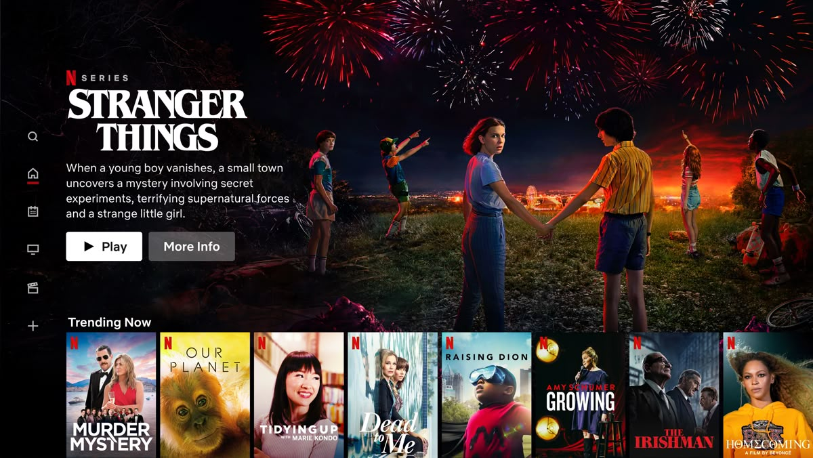
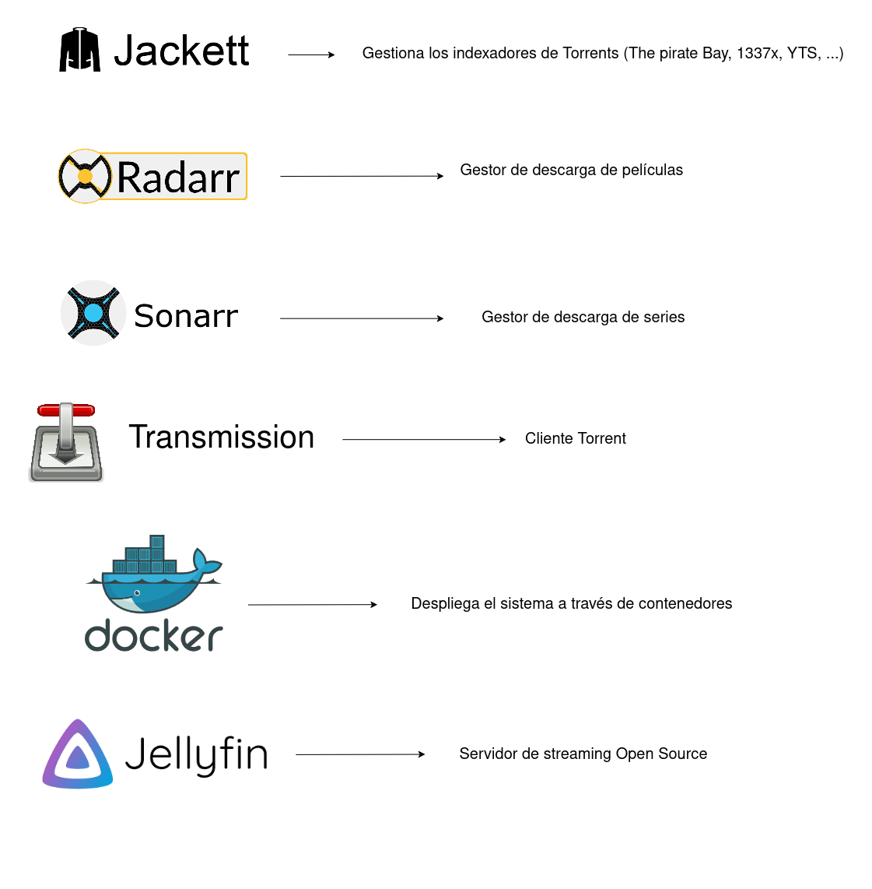

Como NO crear tu propio servidor de streaming gratuito con Docker (Jellyfin, Sonarr, Radarr, Jackett, Transmission)
¿Te imaginas tener tu propio "Netflix casero" que descargue automáticamente series y películas, y te permita verlas en cualquier dispositivo, sin depender de plataformas externas?
Con este artículo aprenderás cómo NO se debe montar un servidor de streaming casero usando herramientas libres como Jellyfin, Sonarr, Radarr, Jackett, y Transmission, todo orquestado con contenedores Docker, lanzados a través de Docker Compose.
Advertencia legal:
Este artículo tiene fines educativos y didácticos. El uso de herramientas como Jackett, Sonarr, Radarr y Transmission para descargar contenido protegido por derechos de autor puede ser ilegal en tu jurisdicción. Se recomienda encarecidamente utilizar estas herramientas únicamente con contenido de dominio público o con el debido permiso del titular de los derechos de autor.
Tecnologías a utilizar

Jellyfin
Jellyfin es un servidor multimedia de código abierto que permite organizar, gestionar y reproducir tus archivos de vídeo, música e imágenes desde cualquier dispositivo conectado a tu red. Funciona como un "Netflix casero", escaneando las carpetas que le indiques (como `/media/movies` o `/media/tv`) y creando automáticamente una biblioteca con carátulas, descripciones y metadatos descargados de internet. En este proyecto, Jellyfin es la interfaz principal desde la que accedemos al contenido descargado por Sonarr y Radarr, permitiéndonos ver películas y series desde el navegador, móvil, Smart TV o incluso a través de apps oficiales, todo de forma centralizada y personalizada.
Requisitos previos
- Un ordenador / servidor o MV Linux (recomendado). Windows o Mac
- Docker y Docker Compose instalados.
- Carpeta del proyecto con la siguiente estructura:
media-server/ ├── docker-compose.yml ├── config/ │ ├── jellyfin/ │ ├── sonarr/ │ ├── radarr/ │ ├── transmission/ │ └── jackett/ ├── downloads/ # Descargas de Transmission ├── media/ │ ├── tv/ # Series para Sonarr │ └── movies/ # Pelis para Radarr └── watch/ # (opcional) Torrents .torrent
Archivo docker-compose.yml
Este archivo define todos los servicios y sus configuraciones para Docker Compose:
version: "3.9"
services:
jellyfin:
image: jellyfin/jellyfin
container_name: jellyfin
ports:
- "8096:8096"
volumes:
- ./config/jellyfin:/config
- ./media:/media
restart: unless-stopped
sonarr:
image: linuxserver/sonarr
container_name: sonarr
ports:
- "8989:8989"
environment:
- PUID=1000
- PGID=1000
- TZ=Europe/Madrid
volumes:
- ./config/sonarr:/config
- ./downloads:/downloads
- ./media/tv:/tv
restart: unless-stopped
radarr:
image: linuxserver/radarr
container_name: radarr
ports:
- "7878:7878"
environment:
- PUID=1000
- PGID=1000
- TZ=Europe/Madrid
volumes:
- ./config/radarr:/config
- ./downloads:/downloads
- ./media/movies:/movies
restart: unless-stopped
transmission:
image: linuxserver/transmission
container_name: transmission
ports:
- "9091:9091"
- "51413:51413"
- "51413:51413/udp"
environment:
- PUID=1000
- PGID=1000
- TZ=Europe/Madrid
- USER=nico
- PASS=1234
volumes:
- ./downloads:/downloads
- ./config/transmission:/config
- ./watch:/watch
restart: unless-stopped
jackett:
image: linuxserver/jackett
container_name: jackett
ports:
- "9117:9117"
environment:
- PUID=1000
- PGID=1000
- TZ=Europe/Madrid
volumes:
- ./config/jackett:/config
- ./downloads:/downloads
restart: unless-stopped
Para levantar el servicio, ve a la carpeta "media-server/" y lanza el siguiente comando:
docker compose up -dEste archivo lanza todos los servicios cada uno en contenedores individuales, de modo que son sencillos de manipular y monitorear. Para acceder a cada una de la interfaces web, utiliza las siguientes URLs (o cambia los puertos en el docker-compose):
- Jellyfin: `http://IPdelServidor:8096`
- Sonarr: `http://IPdelServidor:8989`
- Radarr: `http://IPdelServidor:7878`
- Transmission: `http://IPdelServidor:9091`
- Jackett: `http://IPdelServidor:9117`
🔒 Consejos de seguridad y acceso remoto
- No expongas directamente los puertos en Internet: utiliza una VPN o red privada virtual para acceder de forma segura a tu servidor.
- Usa Tailscale: crea una red privada entre tu PC y tu móvil sin necesidad de abrir puertos. Es gratis para uso personal y muy fácil de configurar.
- Cambia las contraseñas por defecto: Transmission, Jellyfin y otros servicios pueden tener credenciales por defecto. Cámbialas siempre.
- Haz copias de seguridad: al menos del contenido descargado y de las configuraciones de tus contenedores (`/config`).
- Actualiza regularmente: tanto las imágenes Docker como las aplicaciones internas. Puedes usar `watchtower` si quieres automatizarlo.
Si decides exponer tus servicios a Internet (por ejemplo, para ver tus pelis fuera de casa), considera usar un proxy inverso con HTTPS y autenticación. También puedes usar un dominio con DuckDNS o No-IP para facilitar el acceso remoto seguro.